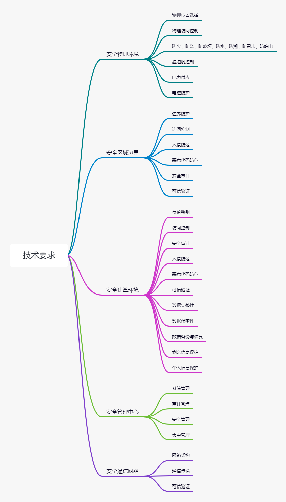
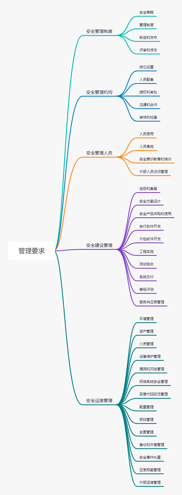

等级保护
等级保护2.0⚓︎
网络安全等级保护条例
| 标准号 | 类别 | 标准名称 | 文件名称 |
|---|---|---|---|
| GB 17859-1999 | 计算机信息系统 | 安全保护等级划分准则 | GB 17859-1999.pdf |
| GB/T 22239-2019 | 信息安全技术 | 网络安全等级保护基本要求 | GBT 22239-2019.pdf |
| GB/T 22240-2020 | 信息安全技术 | 网络安全等级保护定级指南 | GBT 22240-2020.pdf |
| GB/T 25070-2019 | 信息安全技术 | 网络安全等级保护安全设计技术要求 | GBT 25070-2019.pdf |
| GB/T 28448-2019 | 信息安全技术 | 网络安全等级保护测评要求 | GBT 28448-2019.pdf |
| GB/T 28449-2018 | 信息安全技术 | 网络安全等级保护测评要求 | GBT 28449-2018.pdf |
| GB/T 36958-2018 | 信息安全技术 | 网络安全等级保护安全管理中心技术要求 | GBT 36958-2018.pdf |
主要标准的特点和变化⚓︎
No.1 标准的主要特点⚓︎
-
将对象范围由原来的信息系统改为等级保护对象（信息系统、通信网络设施和数据资源等），对象包括网络基础设施（广电网、电信网、专用通信网络 等）、云计算平台/系统、大数据平台/系统、物联网、工业控制 系统、采用移动互联技术的系统等。
-
在1.0标准的基础上进行了优化，同时针对云计算、移动互联、物联网、工业控制系统及大数据等新技术和新应用领域提出新要求，形成了安全通用要求+新应用安全扩展要求构成的标准要求内容。
-
采用了“一个中心，三重防护”的防护理念和分类结构，强化了建立纵深防御和精细防御体系的思想。
-
强化了密码技术和可信计算技术的使用，把可信验证列入各个级别并逐级提出各个环节的主要可信验证要求，强调通过密码技术、可信验证、安全审计和态势感知等建立主动防御体系的期望。
No.2 标准的主要变化⚓︎
-
名称由原来的《信息系统安全等级保护基本要求》改为《网络安全等级保护基本要求》。等级保护对象由原来的信息系统调整为基础信息网络、信息系统（含采用移动互联技术的系统）、云计算平台/系统、大数据应用/平台/资源、物联网和工业控制系统等。
-
将原来各个级别的安全要求分为安全通用要求和安全扩展要求，其中安全扩展要求包括安全扩展要求云计算安全扩展要求、移动互联安全扩展要求、物联网安全扩展要求以及工业控制系统安全扩展要求。安全通用要求是不管等级保护对象形态如何必须满足的要求。
-
基本要求中各级技术要求修订为“安全物理环境”、“安全通信网络”、“安全区域边界”、“安全计算环境”和“安全管理中心”；各级管理要求修订为“安全管理制度”、“安全管理机构”、“安全管理人员”、“安全建设管理”和“安全运维管理”。
-
取消了原来安全控制点的S、A、G标注，增加一个附录A“关于安全通用要求和安全扩展要求的选择和使用”，描述等级保护对象的定级结果和安全要求之间的关系，说明如何根据定级的S、A结果选择安全要求的相关条款，简化了标准正文部分的内容。增加附录C描述等级保护安全框架和关键技术、增加附录D描述云计算应用场景、附录E描述移动互联应用场景、附录F描述物联网应用场景、附录G描述工业控制系统应用场景、附录H描述大数据应用场景。
主要标准的框架和内容⚓︎
No.1 标准的框架结构⚓︎
《GB/T 22239-2019》、《GB/T 25070-2019》和《GB/T28448-2019》三个标准采取了统一的框架结构。
安全通用要求细分为技术要求和管理要求。其中技术要求包括“安全物理环境”、“安全通信网络”、“安全区域边界”、“安全计算环境”和“安全管理中心”；管理要求包括“安全管理制度”、“安全管理机构”、“安全管理人员”、“安全建设管理”和“安全运维管理”。
No.2 安全通用要求⚓︎
安全通用要求针对共性化保护需求提出，无论等级保护对象以何种形式出现，需要根据安全保护等级实现相应级别的安全通用要求。安全扩展要求针对个性化保护需求提出，等级保护对象需要根据安全保护等级、使用的特定技术或特定的应用场景实现安全扩展要求。等级保护对象的安全保护需要同时落实安全通用要求和安全扩展要求提出的措施。
- 安全物理环境
针对物理机房提出的安全控制要求。主要对象为物理环境、物理设备和物理设施等；涉及的安全控制点包括物理位置的选择、物理访问控制、防盗窃和防破坏、防雷击、防火、防水和防潮、防静电、温湿度控制、电力供应和电磁防护。
- 安全通信网络
针对通信网络提出的安全控制要求。主要对象为广域网、城域网和局域网等；涉及的安全控制点包括网络架构、通信传输和可信验证。
- 安全区域边界
针对网络边界提出的安全控制要求。主要对象为系统边界和区域边界等；涉及的安全控制点包括边界防护、访问控制、入侵防范、恶意代码防范、安全审计和可信验证。
- 安全计算环境
针对边界内部提出的安全控制要求。主要对象为边界内部的所有对象，包括网络设备、安全设备、服务器设备、终端设备、应用系统、数据对象和其他设备等；涉及的安全控制点包括身份鉴别、访问控制、安全审计、入侵防范、恶意代码防范、可信验证、数据完整性、数据保密性、数据备份与恢复、剩余信息保护和个人信息保护。
- 安全管理中心
针对整个系统提出的安全管理方面的技术控制要求，通过技术手段实现集中管理；涉及的安全控制点包括系统管理、审计管理、安全管理和集中管控。
- 安全管理制度
针对整个管理制度体系提出的安全控制要求，涉及的安全控制点包括安全策略、管理制度、制定和发布以及评审和修订。
- 安全管理机构
针对整个管理组织架构提出的安全控制要求，涉及的安全控制点包括岗位设置、人员配备、授权和审批、沟通和合作以及审核和检查。
- 安全管理人员
针对人员管理提出的安全控制要求，涉及的安全控制点包括人员录用、人员离岗、安全意识教育和培训以及外部人员访问管理。
- 安全建设管理
针对安全建设过程提出的安全控制要求，涉及的安全控制点包括定级和备案、安全方案设计、安全产品采购和使用、自行软件开发、外包软件开发、工程实施、测试验收、系统交付、等级测评和服务供应商管理。
- 安全运维管理
针对安全运维过程提出的安全控制要求，涉及的安全控制点包括环境管理、资产管理、介质管理、设备维护管理、漏洞和风险管理、网络和系统安全管理、恶意代码防范管理、配置管理、密码管理、变更管理、备份与恢复管理、安全事件处置、应急预案管理和外包运维管理。
No.3 安全扩展要求⚓︎
安全扩展要求是采用特定技术或特定应用场景下的等级保护对象需要增加实现的安全要求。包括以下四方面：
-
云计算安全扩展要求是针对云计算平台提出的安全通用要求之外额外需要实现的安全要求。主要内容包括“基础设施的位置”、“虚拟化安全保护”、“镜像和快照保护”、“云计算环境管理”和“云服务商选择”等。
-
移动互联安全扩展要求是针对移动终端、移动应用和无线网络提出的安全要求，与安全通用要求一起构成针对采用移动互联技术的等级保护对象的完整安全要求。主要内容包括“无线接入点的物理位置”、“移动终端管控”、“移动应用管控”、“移动应用软件采购”和“移动应用软件开发”等。
-
物联网安全扩展要求是针对感知层提出的特殊安全要求，与安全通用要求一起构成针对物联网的完整安全要求。主要内容包括“感知节点的物理防护”、“感知节点设备安全”、“网关节点设备安全”、“感知节点的管理”和“数据融合处理”等。
-
工业控制系统安全扩展要求主要是针对现场控制层和现场设备层提出的特殊安全要求，它们与安全通用要求一起构成针对工业控制系统的完整安全要求。主要内容包括“室外控制设备防护”、“工业控制系统网络架构安全”、“拨号使用控制”、“无线使用控制”和“控制设备安全”等。
相关要求


等保要求
| 类别 | 环境 | 评测项 | 说明 | 一级 | 二级 | 三级 | 四级 | ||||||||||||||||
|---|---|---|---|---|---|---|---|---|---|---|---|---|---|---|---|---|---|---|---|---|---|---|---|
安全通用要求 |
安全物理环境 |
物理位置选择 |
机房场地应选择在具有防震、防风和防雨等能力的建筑内。 | √ | √ | √ | |||||||||||||||||
| 机房场地应选择在具有防震、防风和防雨等能力的建筑内。 | √ | √ | √ | ||||||||||||||||||||
物理访问控制 |
机房出入口应安排专人值守或配置电子门禁系统，控制、鉴别和记录进入的人员。 | √ | √ | ||||||||||||||||||||
| 机房出入口应配置电子门禁系统，控制、鉴别和记录进入的人员。 | √ | √ | |||||||||||||||||||||
| 重要区域应配置第二道电子门禁系统，控制、鉴别和记录进入的人员。 | √ | ||||||||||||||||||||||
防盗窃和防破坏 |
应将设备或主要部件进行固定，并设置明显的不易除去的标识。 | √ | √ | √ | √ | ||||||||||||||||||
| 应将通信线缆铺设在隐蔽安全处。 | √ | √ | √ | ||||||||||||||||||||
| 应设置机房防盗报警系统或设置有专人值守的视频监控系统。 | √ | √ | |||||||||||||||||||||
防雷击 |
应将各类机柜、设施和设备等通过接地系统安全接地。 | √ | √ | √ | √ | ||||||||||||||||||
| 应采取措施防止感应雷，例如设置防雷保安器或过压保护装置等。 | √ | √ | |||||||||||||||||||||
防火 |
机房应设置灭火设备。 | √ | |||||||||||||||||||||
| 机房应设置火灾自动消防系统，能够自动检测火情、自动报警，并自动灭火。 | √ | √ | √ | ||||||||||||||||||||
| 机房及相关的工作房间和辅助房应采用具有耐火等级的建筑材料。 | √ | √ | √ | ||||||||||||||||||||
| 应对机房划分区域进行管理，区域和区域之间设置隔离防火措施。 | √ | √ | |||||||||||||||||||||
防水和防潮 |
应采取措施防止雨水通过机房窗户、屋顶和墙壁渗透。 | √ | √ | √ | √ | ||||||||||||||||||
| 应采取措施防止机房内水蒸气结露和地下积水的转移与渗透。 | √ | √ | √ | ||||||||||||||||||||
| 应安装对水敏感的检测仪表或元件，对机房进行防水检测和报警。 | √ | √ | |||||||||||||||||||||
防静电 |
应采用防静电地板或地面并采用必要的接地防静电措施。 | √ | √ | √ | |||||||||||||||||||
| 应采取措施防止静电的产生，例如釆用静电消除器、佩戴防静电手环等。 | √ | √ | |||||||||||||||||||||
温湿度控制 |
应设置必要的温湿度调节设施，使机房温湿度的变化在设备运行所允许的范围之内。 | √ | √ | √ | √ | ||||||||||||||||||
电力供应 |
应在机房供电线路上配置稳压器和过电压防护设备。 | √ | √ | √ | √ | ||||||||||||||||||
| 应提供短期的备用电力供应，至少满足设备在断电情况下的正常运行要求。 | √ | √ | √ | ||||||||||||||||||||
| 应设置冗余或并行的电力电缆线路为计算机系统供电。 | √ | √ | |||||||||||||||||||||
| 应提供应急供电设备。 | √ | ||||||||||||||||||||||
电磁防护 |
电源线和通信线缆应隔离铺设，避免互相干扰。 | √ | √ | √ | |||||||||||||||||||
| 应对关键设备或关键区域实施电磁屏蔽。 | √ | √ | |||||||||||||||||||||
安全通信网络 |
网络架构 |
应保证网络设备的业务处理能力满足业务高峰期需要。 | √ | √ | |||||||||||||||||||
| 应保证网络各个部分的带宽满足业务高峰期需要。 | √ | √ | |||||||||||||||||||||
| 应划分不同的网络区域，并按照方便管理和控制的原则为各网络区域分配地址。 | √ | √ | √ | ||||||||||||||||||||
| 应避免将重要网络区域部署在边界处，重要网络区域与其他网络区域之间应釆取可靠的技术隔离手段。 | √ | √ | √ | ||||||||||||||||||||
| 应提供通信线路、关键网络设备和关键计算设备的硬件冗余，保证系统的可用性。 | √ | √ | |||||||||||||||||||||
| 应按照业务服务的重要程度分配带宽，优先保障重要业务。 | √ | ||||||||||||||||||||||
通信传输 |
应采用校验技术保证通信过程中数据的完整性。 | √ | |||||||||||||||||||||
| 应采用校验技术或密码技术保证通信过程中数据的完整性。 | √ | √ | √ | ||||||||||||||||||||
| 应釆用密码技术保证通信过程中数据的保密性。 | √ | √ | |||||||||||||||||||||
| 应在通信前基于密码技术对通信的双方进行验证或认证。 | √ | ||||||||||||||||||||||
| 应基于硬件密码模块对重要通信过程进行密码运算和密钥管理。 | √ | ||||||||||||||||||||||
可信验证 |
可基于可信根对通信设备的系统引导程序、系统程序等进行可信验证，并在检测到其可信性受到破坏后进行报警。 | √ | |||||||||||||||||||||
| 可基于可信根对通信设备的系统引导程序、系统程序、重要配置参数和通信应用程序等进行可信验证，并在检测到其可信性受到破坏后进行报警,并将验证结果形成审计记录送至安全管理中心。 | √ | ||||||||||||||||||||||
| 可基于可信根对通信设备的系统引导程序、系统程序、重要配置参数和通信应用程序等进行可信验证，并在应用程序的关键执行环节进行动态可信验证，在检测到其可信性受到破坏后进行报警，并将验证结果形成审计记录送至安全管理中心。 | √ | ||||||||||||||||||||||
| 可基于可信根对通信设备的系统引导程序、系统程序、重要配置参数和通信应用程序等进行可信验证，并在应用程序的所有执行环节进行动态可信验证，在检测到其可信性受到破坏后进行报警，并将验证结果形成审计记录送至安全管理中心，并进行动态关联感知。 | √ | ||||||||||||||||||||||
安全区域边界 |
边界防护 |
应保证跨越边界的访问和数据流通过边界设备提供的受控接口进行通信。 | √ | √ | √ | √ | |||||||||||||||||
| 应能够对非授权设备私自联到内部网络的行为进行检査或限制。 | √ | √ | |||||||||||||||||||||
| 应能够对内部用户非授权联到外部网络的行为进行检查或限制。 | √ | √ | |||||||||||||||||||||
| 应限制无线网络的使用，保证无线网络通过受控的边界设备接入内部网络。 | √ | √ | |||||||||||||||||||||
| 应能够在发现非授权设备私自联到内部网络的行为或内部用户非授权联到外部的行为时，对其进行有效阻断。 | √ | ||||||||||||||||||||||
| 应采用可信验证机制对接入到网络中的设备进行可信验证，保证接入网络的设备真实可信。 | √ | ||||||||||||||||||||||
访问控制 |
应在网络边界根据访问控制策略设置访问控制规则，默认情况下除允许通信外受控接口拒绝所有通信。 | √ | √ | √ | √ | ||||||||||||||||||
| 应删除多余或无效的访问控制规则，优化访问控制列表，并保证访问控制规则数量最小化。 | √ | √ | √ | √ | |||||||||||||||||||
| 应对源地址、目的地址、源端口、目的端口和协议等进行检査，以允许/拒绝数据包进出。 | √ | √ | √ | √ | |||||||||||||||||||
| 应能根据会话状态信息为进出数据流提供明确的允许/拒绝访问的能力。 | √ | √ | √ | ||||||||||||||||||||
| 应对进出网络的数据流实现基于应用协议和应用内容的访问控制。 | √ | ||||||||||||||||||||||
| 应在网络边界通过通信协议转换或通信协议隔离等方式进行数据交换。 | √ | ||||||||||||||||||||||
入侵防范 |
应在关键网络节点处监视网络攻击行为。 | √ | |||||||||||||||||||||
| 应在关键网络节点处检测、防止或限制从外部发起的网络攻击行为。 | √ | √ | |||||||||||||||||||||
| 应在关键网络节点处检测、防止或限制从内部发起的网络攻击行为。 | √ | √ | |||||||||||||||||||||
| 应采取技术措施对网络行为进行分析，实现对网络攻击特别是新型网络攻击行为的分析。 | √ | √ | |||||||||||||||||||||
| 当检测到攻击行为时，记录攻击源IP、攻击类型、攻击目标、攻击事件，在发生严重入侵事件时应提供报警。 | √ | √ | |||||||||||||||||||||
恶意代码和垃圾邮件防范 |
应在关键网络节点处对恶意代码进行检测和清楚，并维护恶意代码防护机制的升级和更新。 | √ | √ | √ | |||||||||||||||||||
| 应在关键网络节点处对垃圾邮件进行检测和防护，并维护垃圾邮件防护机制的升级和更新。 | √ | √ | |||||||||||||||||||||
安全审计 |
应在网络边界、重要网络节点进行安全审计，审计覆盖到每个用户，对重要的用户行为和重要的安全事件进行审计。 | √ | √ | √ | |||||||||||||||||||
| 审计记录应包括事件的日期和时间、用户、事件类型、事件是否成功以及其他与审计相关的信息。 | √ | √ | √ | ||||||||||||||||||||
| 应对审计记录进行保护，定期备份，避免受到未预期的删除、修改或覆盖等。 | √ | √ | √ | ||||||||||||||||||||
| 应能对远程访问的用户行为、访问互联网的用户行为等单独进行行为审计和数据分析。 | √ | ||||||||||||||||||||||
可信验证 |
可基于可信根对边界设备的系统引导程序、系统程序等进行可信验证，并在检测到其可信性受到破坏后进行报警。 | √ | |||||||||||||||||||||
| 可基于可信根对边界设备的系统引导程序、系统程序、重要配置参数和边界防护应用程序等进行可信验证，并在检测到其可信性受到破坏后进行报警，并将验证结果形成审计记录送至安全管理中心。 | √ | ||||||||||||||||||||||
| 可基于可信根对边界设备的系统引导程序、系统程序、重要配置参数和边界防护应用程序等进行可信验证，并在应用程序的关键执行环节进行动态可信验证，在检测到其可信性受到破坏后进行报警，并将验证结果形成审计记录送至安全管理中心。 | √ | ||||||||||||||||||||||
| 可基于可信根对边界设备的系统引导程序、系统程序、重要配置参数和边界防护应用程序等进行可信验证，并在应用程序的所有执行环节进行动态可信验证，在检测到其可信性受到破坏后进行报警，并将验证结果形成审计记录送至安全管理中心，并进行动态关联感知。 | √ | ||||||||||||||||||||||
安全区域边界 |
边界防护 |
应保证跨越边界的访问和数据流通过边界设备提供的受控接口进行通信。 | √ | √ | √ | √ | |||||||||||||||||
| 应能够对非授权设备私自联到内部网络的行为进行检査或限制。 | √ | √ | |||||||||||||||||||||
| 应能够对内部用户非授权联到外部网络的行为进行检查或限制。 | √ | √ | |||||||||||||||||||||
| 应限制无线网络的使用，保证无线网络通过受控的边界设备接入内部网络。 | √ | √ | |||||||||||||||||||||
| 应能够在发现非授权设备私自联到内部网络的行为或内部用户非授权联到外部的行为时，对其进行有效阻断。 | √ | ||||||||||||||||||||||
| 应采用可信验证机制对接入到网络中的设备进行可信验证，保证接入网络的设备真实可信。 | √ | ||||||||||||||||||||||
访问控制 |
应在网络边界根据访问控制策略设置访问控制规则，默认情况下除允许通信外受控接口拒绝所有通信。 | √ | √ | √ | √ | ||||||||||||||||||
| 应删除多余或无效的访问控制规则，优化访问控制列表，并保证访问控制规则数量最小化。 | √ | √ | √ | √ | |||||||||||||||||||
| 应对源地址、目的地址、源端口、目的端口和协议等进行检査，以允许/拒绝数据包进出。 | √ | √ | √ | √ | |||||||||||||||||||
| 应能根据会话状态信息为进出数据流提供明确的允许/拒绝访问的能力。 | √ | √ | √ | ||||||||||||||||||||
| 应对进出网络的数据流实现基于应用协议和应用内容的访问控制。 | √ | ||||||||||||||||||||||
| 应在网络边界通过通信协议转换或通信协议隔离等方式进行数据交换。 | √ | ||||||||||||||||||||||
入侵防范 |
应在关键网络节点处监视网络攻击行为。 | √ | |||||||||||||||||||||
| 应在关键网络节点处检测、防止或限制从外部发起的网络攻击行为。 | √ | √ | |||||||||||||||||||||
| 应在关键网络节点处检测、防止或限制从内部发起的网络攻击行为。 | √ | √ | |||||||||||||||||||||
| 应采取技术措施对网络行为进行分析，实现对网络攻击特别是新型网络攻击行为的分析。 | √ | √ | |||||||||||||||||||||
| 当检测到攻击行为时，记录攻击源IP、攻击类型、攻击目标、攻击事件，在发生严重入侵事件时应提供报警。 | √ | √ | |||||||||||||||||||||
恶意代码和垃圾邮件防范 |
应在关键网络节点处对恶意代码进行检测和清楚，并维护恶意代码防护机制的升级和更新。 | √ | √ | √ | |||||||||||||||||||
| 应在关键网络节点处对垃圾邮件进行检测和防护，并维护垃圾邮件防护机制的升级和更新。 | √ | √ | |||||||||||||||||||||
安全审计 |
应在网络边界、重要网络节点进行安全审计，审计覆盖到每个用户，对重要的用户行为和重要的安全事件进行审计。 | √ | √ | √ | |||||||||||||||||||
| 审计记录应包括事件的日期和时间、用户、事件类型、事件是否成功以及其他与审计相关的信息。 | √ | √ | √ | ||||||||||||||||||||
| 应对审计记录进行保护，定期备份，避免受到未预期的删除、修改或覆盖等。 | √ | √ | √ | ||||||||||||||||||||
| 应能对远程访问的用户行为、访问互联网的用户行为等单独进行行为审计和数据分析。 | √ | ||||||||||||||||||||||
可信验证 |
可基于可信根对边界设备的系统引导程序、系统程序等进行可信验证，并在检测到其可信性受到破坏后进行报警。 | √ | |||||||||||||||||||||
| 可基于可信根对边界设备的系统引导程序、系统程序、重要配置参数和边界防护应用程序等进行可信验证，并在检测到其可信性受到破坏后进行报警，并将验证结果形成审计记录送至安全管理中心。 | √ | ||||||||||||||||||||||
| 可基于可信根对边界设备的系统引导程序、系统程序、重要配置参数和边界防护应用程序等进行可信验证，并在应用程序的关键执行环节进行动态可信验证，在检测到其可信性受到破坏后进行报警，并将验证结果形成审计记录送至安全管理中心。 | √ | ||||||||||||||||||||||
| 可基于可信根对边界设备的系统引导程序、系统程序、重要配置参数和边界防护应用程序等进行可信验证，并在应用程序的所有执行环节进行动态可信验证，在检测到其可信性受到破坏后进行报警，并将验证结果形成审计记录送至安全管理中心，并进行动态关联感知。 | √ | ||||||||||||||||||||||
安全计算环境 |
身份鉴别 |
应对登录的用户进行身份标识和鉴别，身份标识具有唯一性，身份鉴别信息具有复杂度要求并定期更换。 | √ | √ | √ | √ | |||||||||||||||||
| 应具有登录失败处理功能，应配置并启用结束会话、限制非法登录次数和当登录连接超时自动退出等相关措施。 | √ | √ | √ | √ | |||||||||||||||||||
| 当进行远程管理时，应采取必要措施防止鉴别信息在网络传输过程中被窃听。 | √ | √ | √ | ||||||||||||||||||||
| 应釆用口令、密码技术、生物技术等两种或两种以上组合的鉴别技术对用户进行身份鉴别，且其中一种鉴别技术至少应使用密码技术来实现。 | √ | √ | |||||||||||||||||||||
访问控制 |
应对登录的用户分配账户和权限。 | √ | √ | √ | √ | ||||||||||||||||||
| 应重命名或删除默认账户，修改默认账户的默认口令。 | √ | √ | √ | √ | |||||||||||||||||||
| 应及时删除或停用多余的、过期的账户，避免共享账户的存在。 | √ | √ | √ | √ | |||||||||||||||||||
| 应授予管理用户所需的最小权限,实现管理用户的权限分离。 | √ | √ | √ | ||||||||||||||||||||
| 应由授权主体配置访问控制策略，访问控制策略规定主体对客体的访问规则。 | √ | √ | |||||||||||||||||||||
| 访问控制的粒度应达到主体为用户级或进程级，客体为文件、数据库表级。 | √ | √ | |||||||||||||||||||||
| 应对重要主体和客体设置安全标记，并控制主体对有安全标记信息资源的访问。 | √ | ||||||||||||||||||||||
| 应对主体、客体设置安全标记，并依据安全标记和强制访问控制规则确定主体对客体的访问。 | √ | ||||||||||||||||||||||
安全审计 |
应启用安全审计功能，审计覆盖到每个用户，对重要的用户行为和重要安全事件进行审计。 | √ | √ | √ | |||||||||||||||||||
| 审计记录应包括事件的日期和时间、用户、事件类型、事件是否成功及其他与审计相关的信息。 | √ | √ | |||||||||||||||||||||
| 审计记录应包括事件的日期和时间、事件类型、主体标识、客体标识和结果等。 | √ | ||||||||||||||||||||||
| 应对审计记录进行保护，定期备份，避免受到未预期的删除、修改或覆盖等。 | √ | √ | √ | ||||||||||||||||||||
| 应对审计进程进行保护，防止未经授权的中断。 | √ | √ | |||||||||||||||||||||
入侵防范 |
应遵循最小安装的原则，仅安装需要的组件和应用程序。 | √ | √ | √ | √ | ||||||||||||||||||
| 应关闭不需要的系统服务、默认共享和高危端口。 | √ | √ | √ | √ | |||||||||||||||||||
| 应通过设定终端接入方式或网络地址范围对通过网络进行管理的管理终端进行限制。 | √ | √ | √ | ||||||||||||||||||||
| 应提供数据有效性检验功能，保证通过人机接口输入或通过通信接口输入的内容符合系统设定要求。 | √ | √ | √ | ||||||||||||||||||||
| 应能发现可能存在的已知漏洞，并在经过充分测试评估后，及时修补漏洞。 | √ | √ | √ | ||||||||||||||||||||
| 应能够检测到对重要节点进行入侵的行为，并在发生严重入侵事件时提供报警。 | √ | √ | |||||||||||||||||||||
恶意代码防范 |
应安装防恶意代码软件或配置具有相应功能的软件，并定期进行升级和更新防恶意代码库。 | √ | √ | ||||||||||||||||||||
| 应采用免受恶意代码攻击的技术措施或主动免疫可信验证机制及时识别入侵和病毒行为，并将其有效阻断。 | √ | ||||||||||||||||||||||
| 应采用主动免疫可信验证机制及时识别入侵和病毒行为，并将其有效阻断。 | √ | ||||||||||||||||||||||
可信验证 |
可基于可信根对计算设备的系统引导程序、系统程序等进行可信验证，并在检测到其可信性受到破坏后进行报警。 | √ | |||||||||||||||||||||
| 可基于可信根对计算设备的系统引导程序、系统程序、重要配置参数和应用程序等进行可信验证， 并在检测到其可信性受到破坏后进行报警，并将验证结果形成审计记录送至安全管理中心。 | √ | ||||||||||||||||||||||
| 可基于可信根对计算设备的系统引导程序、系统程序、重要配置参数和应用程序等进行可信验证, 并在应用程序的关键执行环节进行动态可信验证，在检测到其可信性受到破坏后进行报警，并将验证结果形成审计记录送至安全管理中心。 | √ | ||||||||||||||||||||||
| 可基于可信根对计算设备的系统引导程序、系统程序、重要配置参数和应用程序等进行可信验证, 并在应用程序的所有执行环节进行动态可信验证，在检测到其可信性受到破坏后进行报警，并将验证结果形成审计记录送至安全管理中心，并进行动态关联感知。 | √ | ||||||||||||||||||||||
数据完整性 |
应采用校验技术保证重要数据在传输过程中的完整性。 | √ | √ | ||||||||||||||||||||
| 应采用校验技术或密码技术保证重要数据在传输过程中的完整性，包括但不限于鉴别数据、重要业务数据、重要审计数据、重要配置数据、重要视频数据和重要个人信息等。 | √ | √ | |||||||||||||||||||||
| 应采用校验技术或密码技术保证重要数据在存储过程中的完整性，包括但不限于鉴别数据、重要业务数据、重要审计数据、重要配置数据、重要视频数据和重要个人信息等。 | √ | √ | |||||||||||||||||||||
| 在可能涉及法律责任认定的应用中，应采用密码技术提供数据原发证据和数据接受证据，实现数据原发行为的抗抵赖和数据接收行为的抗抵赖。 | √ | ||||||||||||||||||||||
数据保密性 |
应釆用密码技术保证重要数据在传输过程中的保密性，包括但不限于鉴别数据、重要业务数据和重要个人信息等。 | √ | √ | ||||||||||||||||||||
| 应采用密码技术保证重要数据在存储过程中的保密性，包括但不限于鉴别数据、重要业务数据和重要个人信息等。 | √ | √ | |||||||||||||||||||||
数据备份恢复 |
应提供重要数据的本地数据备份与恢复功能。 | √ | √ | √ | √ | ||||||||||||||||||
| 应提供异地实时备份功能,利用通信网络将重要数据实时备份至备份场地。 | √ | √ | √ | ||||||||||||||||||||
| 应提供重要数据处理系统的热冗余，保证系统的高可用性。 | √ | √ | |||||||||||||||||||||
| 应建立异地灾难备份中心，提供业务应用的实时切换。 | √ | ||||||||||||||||||||||
剩余信息保护 |
应保证鉴别信息所在的存储空间被释放或重新分配前得到完全清除。 | √ | √ | √ | |||||||||||||||||||
| 应保证存有敏感数据的存储空间被释放或重新分配前得到完全清除。 | √ | √ | |||||||||||||||||||||
个人信息保护 |
应仅采集和保存业务必需的用户个人信息。 | √ | √ | √ | |||||||||||||||||||
| 应禁止未授权访问和非法使用用户个人信息。 | √ | √ | √ | ||||||||||||||||||||
安全管理制度 |
安全策略 |
应制定网络安全工作的总体方针和安全策略，阐明机构安全工作的总体目标、范围、原则和安全框架等。 | √ | √ | √ | ||||||||||||||||||
管理制度 |
应建立日常管理活动中常用的安全管理制度。 | √ | |||||||||||||||||||||
| 应对安全管理活动中的主要管理内容建立安全管理制度。 | √ | ||||||||||||||||||||||
| 应对安全管理活动中的各类管理内容建立安全管理制度。 | √ | √ | |||||||||||||||||||||
| 应对管理人员或操作人员执行的日常管理操作建立操作规程。 | √ | √ | √ | ||||||||||||||||||||
| 应形成由安全策略、管理制度、操作规程、记录表単等构成的全面的安全管理制度体系。 | √ | √ | |||||||||||||||||||||
制定和发布 |
应指定或授权专门的部门或人员负责安全管理制度的制定。 | √ | √ | √ | |||||||||||||||||||
| 安全管理制度应通过正式、有效的方式发布，并进行版本控制。 | √ | √ | √ | ||||||||||||||||||||
评审和修订 |
应定期对安全管理制度的合理性和适用性进行论证和审定，对存在不足或需要改进的安全管理制度进行修订。 | √ | √ | √ | |||||||||||||||||||
安全管理机构 |
岗位设置 |
应设立系统管理员等岗位，并定义各个工作岗位的职责。 | √ | ||||||||||||||||||||
| 应成立指导和管理网络安全工作的委员会或领导小组，其最高领导由单位主管领导担任或授权。 | √ | √ | |||||||||||||||||||||
| 应设立网络安全管理工作的职能部门，设立安全主管、安全管理各个方面的负责人岗位，并定义各负责人的职责。 | √ | √ | √ | ||||||||||||||||||||
| 应设立系统管理员、审计管理员和安全管理员等岗位，并定义部门及各个工作岗位的职责。 | √ | √ | √ | ||||||||||||||||||||
人员配备 |
应配备一定数量的系统管理员。 | √ | |||||||||||||||||||||
| 应配备一定数量的系统管理员、审计管理员和安全管理员等。 | √ | √ | √ | ||||||||||||||||||||
| 应配备专职安全管理员，不可兼任。 | √ | √ | |||||||||||||||||||||
| 关键事务岗位应配备多人共同管理。 | √ | ||||||||||||||||||||||
授权和审批 |
应根据各个部门和岗位的职责明确授权审批事项、审批部门和批准人等。 | √ | √ | √ | √ | ||||||||||||||||||
| 应针对系统变更、重要操作、物理访问和系统接入等事项执行审批过程。 | √ | ||||||||||||||||||||||
| 应针对系统变更、重要操作、物理访问和系统接入等事项建立审批程序，按照审批程序执行审批过程，对重要活动建立逐级审批制度。 | √ | √ | |||||||||||||||||||||
| 应定期审查审批事项，及时更新需授权和审批的项目、审批部门和审批人等信息。 | √ | √ | |||||||||||||||||||||
沟通和合作 |
应加强各类管理人员、组织内部机构和网络安全管理部门之间的合作与沟通，定期召开协调会议，共同协作处理网络安全问题。 | √ | √ | √ | |||||||||||||||||||
| 应加强与网络安全职能部门、各类供应商、业界专家及安全组织的合作与沟通。 | √ | √ | √ | ||||||||||||||||||||
| 应建立外联单位联系列表，包括外联单位名称、合作内容、联系人和联系方式等信息。 | √ | √ | √ | ||||||||||||||||||||
审核和检查 |
应定期进行常规安全检查,检查内容包括系统日常运行、系统漏洞和数据备份等情况。 | √ | √ | √ | |||||||||||||||||||
| 应定期进行全面安全检査，检査内容包括现有安全技术措施的有效性、安全配置与安全策略的一致性、安全管理制度的执行情况等。 | √ | √ | |||||||||||||||||||||
| 应制定安全检査表格实施安全检查，汇总安全检查数据，形成安全检查报告，并对安全检查结果进行通报。 | √ | √ | |||||||||||||||||||||
安全管理人员 |
人员录用 |
应指定或授权专门的部门或人员负责人员录用。 | √ | √ | √ | √ | |||||||||||||||||
| 应对被录用人员的身份、安全背景、专业资格或资质等进行审査。 | √ | ||||||||||||||||||||||
| 应对被录用人员的身份、安全背景、专业资格或资质等进行审查，对其所具有的技术技能进行考核。 | √ | √ | |||||||||||||||||||||
| 应与被录用人员签署保密协议，与关键岗位人员签署岗位责任协议。 | √ | √ | |||||||||||||||||||||
| 应从内部人员中选拔从事关键岗位的人员。 | √ | ||||||||||||||||||||||
人员离岗 |
应及时终止离岗人员的所有访问权限，取回各种身份证件、钥匙、徽章等以及机构提供的软硬件设备。 | √ | √ | √ | √ | ||||||||||||||||||
| 应办理严格的调离手续，并承诺调离后的保密义务后方可离开。 | √ | √ | |||||||||||||||||||||
安全意识教育和培训 |
应对各类人员进行安全意识教育和岗位技能培训，并告知相关的安全责任和惩戒措施。 | √ | √ | √ | √ | ||||||||||||||||||
| 应针对不同岗位制定不同的培训计划，对安全基础知识、岗位操作规程等进行培训。 | √ | √ | |||||||||||||||||||||
| 应定期对不同岗位的人员进行技能考核。 | √ | √ | |||||||||||||||||||||
外部人员访问管理 |
应保证在外部人员访问受控区域前得到授权或审批。 | √ | |||||||||||||||||||||
| 应在外部人员物理访问受控区域前先提出书面申请，批准后由专人全程陪同，并登记备案。 | √ | √ | √ | ||||||||||||||||||||
| 应在外部人员接入受控网络访问系统前先提出书面申请，批准后由专人开设账户、分配权限，并登记备案。 | √ | √ | √ | ||||||||||||||||||||
| 外部人员离场后应及时清除其所有的访问权限。 | √ | √ | √ | ||||||||||||||||||||
| 获得系统访问授权的外部人员应签署保密协议,不得进行非授权操作，不得复制和泄露任何敏感信息。 | √ | √ | |||||||||||||||||||||
| 对关键区域或关键系统不允许外部人员访问。 | √ | ||||||||||||||||||||||
安全建设管理 |
定级和备案 |
应以书面的形式说明保护对象的安全保护等级及确定等级的方法和理由。 | √ | √ | √ | √ | |||||||||||||||||
| 应组织相关部门和有关安全技术专家对定级结果的合理性和正确性进行论证和审定。 | √ | √ | √ | ||||||||||||||||||||
| 应保证定级结果经过相关部门的批准。 | √ | √ | √ | ||||||||||||||||||||
| 应将备案材料报主管部门和相应公安机关备案。 | √ | √ | √ | ||||||||||||||||||||
安全方案设计 |
应根据安全保护等级选择基本安全措施，依据风险分析的结果补充和调整安全措施。 | √ | √ | √ | |||||||||||||||||||
| 应根据保护对象的安全保护等级进行安全方案设计。 | √ | ||||||||||||||||||||||
| 应根据保护对象的安全保护等级及与其他级别保护对象的关系进行安全整体规划和安全方案设计，设计内容应包含密码技术相关内容，并形成配套文件。 | √ | √ | |||||||||||||||||||||
| 应组织相关部门和有关安全专家对安全方案的合理性和正确性进行论证和审定，经过批准后才能正式实施。 | √ | ||||||||||||||||||||||
| 应组织相关部门和有关安全专家对安全整体规划及其配套文件的合理性和正确性进行论证和审定，经过批准后才能正式实施。 | √ | √ | |||||||||||||||||||||
产品采购和使用 |
应确保网络安全产品采购和使用符合国家的有关规定。 | √ | √ | √ | |||||||||||||||||||
| 应确保密码产品与服务的采购和使用符合国家密码管理主管部门的要求。 | √ | √ | √ | ||||||||||||||||||||
| 应预先对产品进行选型测试，确定产品的候选范围，并定期审定和更新候选产品名单。 | √ | √ | |||||||||||||||||||||
| 应对重要部位的产品委托专业测评单位进行专项测试，依据测试结果选用产品。 | √ | ||||||||||||||||||||||
自行软件开发 |
应将开发环境与实际运行环境物理分开，测试数据和测试结果受到控制。 | √ | √ | √ | |||||||||||||||||||
| 应制定软件开发管理制度，明确说明开发过程的控制方法和人员行为准则。 | √ | √ | |||||||||||||||||||||
| 应制定代码编写安全规范，要求开发人员参照规范编写代码。 | √ | √ | |||||||||||||||||||||
| 应具备软件设计的相关文档和使用指南，并对文档使用进行控制。 | √ | √ | |||||||||||||||||||||
| 应在软件开发过程中对安全性进行测试,在软件安装前对可能存在的恶意代码进行检测。 | √ | ||||||||||||||||||||||
| 应保证在软件开发过程中对安全性进行测试，在软件安装前对可能存在的恶意代码进行检测。 | √ | √ | |||||||||||||||||||||
| 应对程序资源库的修改、更新、发布进行授权和批准，并严格进行版本控制。 | √ | ||||||||||||||||||||||
| 应保证开发人员未专职人员，开发人员的开发活动受到控制、监视和审查。 | √ | ||||||||||||||||||||||
外包软件开发 |
应在软件交付前检测其中可能存在的恶意代码。 | √ | √ | √ | |||||||||||||||||||
| 应保证开发单位提供软件设计文档和使用指南。 | √ | √ | √ | ||||||||||||||||||||
| 应保证开发单位提供软件源代码，并审查软件中可能存在的后门和隐蔽信道。 | √ | √ | |||||||||||||||||||||
工程实施 |
应指定或授权专门的部门或人员负责工程实施过程的管理。 | √ | √ | √ | |||||||||||||||||||
| 应制定安全工程实施方案控制工程实施过程。 | √ | √ | √ | ||||||||||||||||||||
| 应通过第三方工程监理控制项目的实施过程。 | √ | √ | |||||||||||||||||||||
测试验收 |
应进行安全性测试验收。 | ||||||||||||||||||||||
| 应制订测试验收方案，并依据测试验收方案实施测试验收，形成测试验收报告。 | √ | √ | √ | ||||||||||||||||||||
| 应进行上线前的安全性测试，并出具安全测试报告。 | √ | ||||||||||||||||||||||
| 应进行上线前的安全性测试，并出具安全测试报告，安全测试报告应包含密码应用安全性测试相关内容。 | √ | √ | |||||||||||||||||||||
系统交付 |
应制定交付清单，并根据交付清单对所交接的设备、软件和文档等进行清点。 | √ | √ | √ | |||||||||||||||||||
| 应对负责运行维护的技术人员进行相应的技能培训。 | √ | √ | √ | ||||||||||||||||||||
| 应提供建设过程文档和运行维护文档。 | √ | √ | √ | ||||||||||||||||||||
等级测评 |
应定期进行等级测评，发现不符合相应等级保护标准要求的及时整改。 | √ | √ | √ | |||||||||||||||||||
| 应在发生重大变更或级别发生变化时进行等级测评。 | √ | √ | √ | ||||||||||||||||||||
| 应确保测评机构的选择符合国家有关规定。 | √ | √ | √ | ||||||||||||||||||||
服务供应商选择 |
应确保服务供应商的选择符合国家的有关规定。 | √ | √ | ||||||||||||||||||||
| 应与选定的服务供应商签订与安全相关的协议，明确约定相关责任。 | √ | √ | √ | ||||||||||||||||||||
| 应与选定的服务供应商签订相关协议，明确整个服务供应链各方需履行的网络安全相关义务。 | √ | √ | √ | ||||||||||||||||||||
| 应定期监督、评审和审核服务供应商提供的服务，并对其变更服务内容加以控制。 | √ | √ | |||||||||||||||||||||
安全运维管理 |
环境管理 |
应指定专门的部门或人员负责机房安全,对机房出入进行管理，定期对机房供配电、空调、温湿 度控制、消防等设施进行维护管理。 | √ | √ | √ | ||||||||||||||||||
| 应对机房的安全管理做出规定,包括物理访问、物品进出和环境安全等方面。 | √ | √ | √ | ||||||||||||||||||||
| 应不在重要区域接待来访人员，不随意放置含有敏感信息的纸档文件和移动介质等。 | √ | √ | √ | ||||||||||||||||||||
| 应对出入人员进行相应级别的授权，对进入重要安全区域的人员和活动实时监视等。 | √ | ||||||||||||||||||||||
资产管理 |
应编制并保存与保护对象相关的资产清单，包括资产责任部门、重要程度和所处位置等内容。 | √ | √ | √ | |||||||||||||||||||
| 应根据资产的重要程度对资产进行标识管理，根据资产的价值选择相应的管理措施。 | √ | √ | |||||||||||||||||||||
| 应对信息分类与标识方法作出规定，并对信息的使用、传输和存储等进行规范化管理。 | √ | √ | |||||||||||||||||||||
介质管理 |
应将介质存放在安全的环境中，对各类介质进行控制和保护，实行存储环境专人管理，并根据存档 介质的目录清单定期盘点。 | √ | √ | √ | |||||||||||||||||||
| 应对介质在物理传输过程中的人员选择、打包、交付等情况进行控制，并对介质的归档和查询等进行登记记录。 | √ | √ | √ | ||||||||||||||||||||
设备维护管理 |
应对各种设备（包括备份和冗余设备）、线路等指定专门的部门或人员定期进行维护管理。 | √ | √ | √ | |||||||||||||||||||
| 应对配套设施、软硬件维护管理做出规定，包括明确维护人员的责任、维修和服务的审批、维修过程的监督控制等。 | √ | ||||||||||||||||||||||
| 应建立配套设施、软硬件维护方面的管理制度，对其维护进行有效的管理，包括明确维护人员的责任、维修和服务的审批、维修过程的监督控制等。 | √ | √ | |||||||||||||||||||||
| 信息处理设备应经过审批才能带离机房或办公地点，含有存储介质的设备带出工作环境时其中重要数据应加密。 | √ | √ | |||||||||||||||||||||
| 含有存储介质的设备在报废或重用前，应进行完全清除或被安全覆盖，保证该设备上的敏感数据和授权软件无法被恢复重用。 | √ | √ | |||||||||||||||||||||
漏洞和风险管理 |
应釆取必要的措施识别安全漏洞和隐患，对发现的安全漏洞和隐患及时进行修补或评估可能的影 响后进行修补。 | √ | √ | √ | |||||||||||||||||||
| 应定期开展安全测评，形成安全测评报告，采取措施应对发现的安全问题。 | √ | √ | |||||||||||||||||||||
网络和系统安全管理 |
应划分不同的管理员角色进行网络和系统的运维管理，明确各个角色的责任和权限。 | √ | √ | √ | |||||||||||||||||||
| 应指定专门的部门或人员进行账户管理，对申请账户、建立账户、删除账户等进行控制。 | √ | √ | √ | ||||||||||||||||||||
| 应建立网络和系统安全管理制度，对安全策略、账户管理、配置管理、日志管理、日常管理、日常操作、升级与打补丁、口令更新周期等方面做出规定。 | √ | √ | √ | ||||||||||||||||||||
| 应制定重要设备的配置和操作手册，依据手册对设备进行安全配置和优化配置等。 | √ | √ | √ | ||||||||||||||||||||
| 应详细记录运维操作日志，包括日常巡检工作、运行维护记录、参数的设置和修改等内容。 | √ | √ | √ | ||||||||||||||||||||
| 应指定专门的部门或人员对日志、监测和报警数据等进行分析、统计，及时发现可疑行为。 | √ | √ | |||||||||||||||||||||
| 应严格控制变更性运维，经过审批后才可改变连接、安装系统组件或调整配置参数，操作过程中应保留不可更改的审计日志，操作结束后应同步更新配置信息库。 | √ | √ | |||||||||||||||||||||
| 应严格控制运维工具的使用，经过审批后才可接入进行操作，操作过程中应保留不可更改的审计日志，操作结束后应删除工具中的敏感数据。 | √ | √ | √ | ||||||||||||||||||||
| 应严格控制远程运维的开通，经过审批后才可开通远程运维接口或通道，操作过程中应保留不可更改的审计日志，操作结束后立即关闭接口或通道。 | √ | √ | |||||||||||||||||||||
| 应保证所有与外部的连接均得到授权和批准，应定期检查违反规定无线上网及其他违反网络安全策略的行为。 | √ | √ | |||||||||||||||||||||
恶意代码防范管理 |
应提高所有用户的防恶意代码意识，对外来计算机或存储设备接入系统前进行恶意代码检查等； | √ | √ | ||||||||||||||||||||
| 应对恶意代码防范要求做出规定，包括防恶意代码软件的授权使用、恶意代码库升级、恶意代码的定期査杀等。 | √ | √ | |||||||||||||||||||||
| 应定期检查恶意代码库的升级情况，对截获的恶意代码进行及时分析处理。 | √ | ||||||||||||||||||||||
| 应定期验证防范恶意代码攻击的技术措施的有效性。 | √ | √ | |||||||||||||||||||||
配置管理 |
应记录和保存基本配置信息，包括网络拓扑结构、各个设备安装的软件组件、软件组件的版本和补丁信息、各个设备或软件组件的配置参数等； | √ | √ | √ | |||||||||||||||||||
| 应将基本配置信息改变纳入变更范畴，实施对配置信息改变的控制，并及时更新基本配置信息库。 | √ | √ | |||||||||||||||||||||
密码管理 |
应遵循密码相关国家标准和行业标准。 | √ | √ | √ | |||||||||||||||||||
| 应使用国家密码管理主管部门认证核准的密码技术和产品。 | √ | √ | √ | ||||||||||||||||||||
| 应采用硬件密码模块实现密码运算和密钥管理。 | √ | ||||||||||||||||||||||
变更管理 |
应明确变更需求,变更前根据变更需求制定变更方案，变更方案经过评审、审批后方可实施。 | √ | √ | √ | |||||||||||||||||||
| 应建立变更的申报和审批控制程序，依据程序控制所有的变更，记录变更实施过程。 | √ | √ | |||||||||||||||||||||
| 应建立中止变更并从失败变更中恢复的程序，明确过程控制方法和人员职责。必要时对恢复过程进行演练。 | √ | √ | |||||||||||||||||||||
备份与恢复管理 |
应识别需要定期备份的重要业务信息、系统数据及软件系统等。 | √ | √ | √ | |||||||||||||||||||
| 应规定备份信息的备份方式、备份频度、存储介质、保存期等。 | √ | √ | √ | ||||||||||||||||||||
| 应根据数据的重要性和数据对系统运行的影响，制定数据的备份策略和恢复策略、备份程序和恢复程序等。 | √ | √ | √ | ||||||||||||||||||||
安全事件处置 |
应及时向安全管理部门报告所发现的安全弱点和可疑事件。 | √ | √ | √ | |||||||||||||||||||
| 应明确安全事件的报告和处置流程，规定安全事件的现场处理、事件报告和后期恢复的管理职责。 | √ | ||||||||||||||||||||||
| 应制定安全事件报告和处置管理制度，明确不同安全事件的报告、处置和响应流程，规定安全事件的现场处理、事件报告和后期恢复的管理职责等。 | √ | √ | |||||||||||||||||||||
| 应在安全事件报告和响应处理过程中，分析和鉴定事件产生的原因，收集证据，记录处理过程，总结经验教训。 | √ | √ | √ | ||||||||||||||||||||
| 对造成系统中断和造成信息泄漏的重大安全事件应采用不同的处理程序和报告程序。 | √ | ||||||||||||||||||||||
| 应建立联合防护和应急机制，负责处置跨单位安全事件。 | √ | ||||||||||||||||||||||
应急预案管理 |
应规定统一的应急预案框架，包括启动预案的条件、应急组织构成、应急资源保障、事后教育和培训等内容。 | √ | √ | ||||||||||||||||||||
| 应制定重要事件的应急预案，包括应急处理流程、系统恢复流程等内容。 | √ | √ | √ | ||||||||||||||||||||
| 应定期对系统相关的人员进行应急预案培训，并进行应急预案的演练。 | √ | √ | √ | ||||||||||||||||||||
| 应定期对原有的应急预案重新评估，修订完善。 | √ | √ | |||||||||||||||||||||
| 应建立重大安全事件的跨单位联合应急预案，并进行应急预案的演练。 | √ | ||||||||||||||||||||||
外包运维管理 |
应确保外包运维服务商的选择符合国家的有关规定。 | √ | √ | √ | |||||||||||||||||||
| 应与选定的外包运维服务商签订相关的协议，明确约定外包运维的范围、工作内容。 | √ | √ | √ | ||||||||||||||||||||
| 应保证选择的外包运维服务商在技术和管理方面均应具有按照等级保护要求开展安全运维工作的能力，并将能力要求在签订的协议中明确。 | √ | √ | |||||||||||||||||||||
| 应在与外包运维服务商签订的协议中明确所有相关的安全要求，如可能涉及对敏感信息的访问、处理、存储要求，对IT基础设施中断服务的应急保障要求等。 | √ | √ | |||||||||||||||||||||
云计算安全扩展要求 |
安全物理环境 |
基础设施位置 |
应保证云计算基础设施位于中国境内。 | √ | √ | √ | |||||||||||||||||
安全通信网络 |
网络架构 |
应保证云计算平台不承载高于其安全保护等级的业务应用系统。 | √ | √ | √ | ||||||||||||||||||
| 应实现不同云服务客户虚拟网络之间的隔离。 | √ | √ | √ | ||||||||||||||||||||
| 应具有根据云服务客户业务需求提供通信传输、边界防护、入侵防范等安全机制的能力。 | √ | √ | √ | ||||||||||||||||||||
| 应具有根据云服务客户业务需求自主设置安全策略的能力，包括定义访问路径、选择安全组件、配置安全策略。 | √ | √ | |||||||||||||||||||||
| 应提供开放接口或开放性安全服务，允许云服务客户接入第三方安全产品或在云计算平台选择第三方安全服务。 | √ | √ | |||||||||||||||||||||
| 应提供对虚拟资源的主体和客体设置安全标记的能力，保证云服务客户可以依据安全标记和强制访问控制规则确定主体对客体的访问。 | √ | ||||||||||||||||||||||
| 应提供通信协议转换或通信协议隔离等的数据交换方式，保证云服务客户可以根据业务需求自主选择边界数据交换方式。 | √ | ||||||||||||||||||||||
| 应为第四级业务应用系统划分独立的资源池。 | √ | ||||||||||||||||||||||
安全区域边界 |
访问控制 |
应在虚拟化网络边界部署访问控制机制，并设置访问控制规则。 | √ | √ | √ | ||||||||||||||||||
| 应在不同等级的网络区域边界部署访问控制机制，设置访问控制规则。 | √ | √ | √ | ||||||||||||||||||||
入侵防范 |
应能检测到云服务客户发起的网络攻击行为，并能记录攻击类型、攻击时间、攻击流量等。 | √ | √ | √ | |||||||||||||||||||
| 应能检测到对虚拟网络节点的网络攻击行为，并能记录攻击类型、攻击时间、攻击流量等。 | √ | √ | √ | ||||||||||||||||||||
| 应能检测到虚拟机与宿主机、虚拟机与虚拟机之间的异常流量。 | √ | √ | √ | ||||||||||||||||||||
| 应在检测到网络攻击行为、异常流量情况时进行告警。 | √ | √ | |||||||||||||||||||||
安全审计 |
应对云服务商和云服务客户在远程管理时执行的特权命令进行审计，至少包括虚拟机删除、虚拟机重启。 | √ | √ | √ | |||||||||||||||||||
| 应保证云服务商对云服务客户系统和数据的操作可被云服务客户审计。 | √ | √ | √ | ||||||||||||||||||||
安全计算环境 |
身份鉴别 |
当远程管理云计算平台中设备时,管理终端和云计算平台之间应建立双向身份验证机制。 | √ | √ | |||||||||||||||||||
访问控制 |
应保证当虚拟机迁移时，访问控制策略随其迁移。 | √ | √ | √ | |||||||||||||||||||
| 应允许云服务客户设置不同虚拟机之间的访问控制策略。 | √ | √ | √ | ||||||||||||||||||||
入侵防范 |
应能检测虚拟机之间的资源隔离失效,并进行告警。 | √ | √ | ||||||||||||||||||||
| 应能检测非授权新建虚拟机或者重新启用虚拟机，并进行告警。 | √ | √ | |||||||||||||||||||||
| 应能够检测恶意代码感染及在虚拟机间蔓延的情况，并进行告警。 | √ | √ | |||||||||||||||||||||
镜像和快照保护 |
应针对重要业务系统提供加固的操作系统镜像或操作系统安全加固服务。 | √ | √ | √ | |||||||||||||||||||
| 应提供虚拟机镜像、快照完整性校验功能，防止虚拟机镜像被恶意篡改。 | √ | √ | √ | ||||||||||||||||||||
| 应采取密码技术或其他技术手段防止虚拟机镜像、快照中可能存在的敏感资源被非法访问。 | √ | √ | |||||||||||||||||||||
数据完整性和保密性 |
应确保云服务客户数据、用户个人信息等存储于中国境内，如需出境应遵循国家相关规定。 | √ | √ | √ | |||||||||||||||||||
| 应确保只有在云服务客户授权下，云服务商或第三方才具有云服务客户数据的管理权限。 | √ | √ | √ | ||||||||||||||||||||
| 应确保虚拟机迁移过程中重要数据的完整性，并在检测到完整性受到破坏时采取必要的恢复措施。 | √ | ||||||||||||||||||||||
| 应使用校验码或密码技术确保虚拟机迁移过程中重要数据的完整性，并在检测到完整性受到破坏时釆取必要的恢复措施。 | √ | √ | |||||||||||||||||||||
| 应支持云服务客户部署密钥管理解决方案，保证云服务客户自行实现数据的加解密过程。 | √ | √ | |||||||||||||||||||||
数据备份恢复 |
云服务客户应在本地保存其业务数据的备份。 | √ | √ | √ | |||||||||||||||||||
| 应提供査询云服务客户数据及备份存储位置的能力。 | √ | √ | √ | ||||||||||||||||||||
| 云服务商的云存储服务应保证云服务客户数据存在若干个可用的副本，各副本之间的内容应保持一致。 | √ | √ | |||||||||||||||||||||
| 应为云服务客户将业务系统及数据迁移到其他云计算平台和本地系统提供技术手段，并协助完成迁移过程。 | √ | √ | |||||||||||||||||||||
剩余信息保护 |
应保证虚拟机所使用的内存和存储空间回收时得到完全清除。 | √ | √ | √ | |||||||||||||||||||
| 云服务客户删除业务应用数据时，云计算平台应将云存储中所有副本删除。 | √ | √ | √ | ||||||||||||||||||||
安全管理中心 |
集中管控 |
应能对物理资源和虚拟资源按照策略做统一管理调度与分配。 | √ | √ | |||||||||||||||||||
| 应保证云计算平台管理流量与云服务客户业务流量分离。 | √ | √ | |||||||||||||||||||||
| 应根据云服务商和云服务客户的职责划分，收集各自控制部分的审计数据并实现各自的集中审计。 | √ | √ | |||||||||||||||||||||
| 应根据云服务商和云服务客户的职责划分，实现各自控制部分，包括虚拟化网络、虚拟机、虚拟化安全设备等的运行状况的集中监测。 | √ | √ | |||||||||||||||||||||
安全建设管理 |
云服务商选择 |
应选择安全合规的云服务商，其所提供的云计算平台应为其所承载的业务应用系统提供相应等级的安全保护能力。 | √ | √ | √ | ||||||||||||||||||
| 应在服务水平协议中规定云服务的各项服务内容和具体技术指标。 | √ | √ | √ | ||||||||||||||||||||
| 应在服务水平协议中规定云服务商的权限与责任，包括管理范围、职责划分、访问授权、隐私保护、行为准则、违约责任等。 | √ | √ | |||||||||||||||||||||
| 应在服务水平协议中规定服务合约到期时，完整提供云服务客户数据，并承诺相关数据在云计算平台上清除。 | √ | √ | √ | ||||||||||||||||||||
| 应与选定的云服务商签署保密协议，要求其不得泄露云服务客户数据。 | √ | √ | |||||||||||||||||||||
供应链管理 |
应确保供应商的选择符合国家有关规定。 | √ | √ | √ | |||||||||||||||||||
| 应将供应链安全事件信息或安全威胁信息及时传达到云服务客户。 | √ | √ | √ | ||||||||||||||||||||
| 将供应商的重要变更及时传达到云服务客户，并评估变更带来的安全风险，采取措施对风险进行控制。 | √ | √ | |||||||||||||||||||||
安全运维管理 |
云计算环境管理 |
云计算平台的运维地点应位于中国境内，境外对境内云计算平台实施运维操作应遵循国家相关规定。 | √ | √ | √ | ||||||||||||||||||
移动互联网安全扩展要求 |
安全物理环境 |
无线接入点的物理位置 |
机房场地应选择在具有防震、防风和防雨等能力的建筑内。 | √ | √ | √ | |||||||||||||||||
安全区域边界 |
边界防护 |
应保证有线网络与无线网络边界之间的访问和数据流通过无线接入安全网关设备。 | √ | √ | √ | ||||||||||||||||||
访问控制 |
无线接入设备应开启接入认证功能，并支持釆用认证服务器认证或国家密码管理机构批准的密码模块进行认证。 | √ | |||||||||||||||||||||
| 无线接入设备应开启接入认证功能，并且禁止使用WEP方式进行认证，如使用口令，长度不小于8位字符。 | √ | ||||||||||||||||||||||
入侵防范 |
应能够检测到非授权无线接入设备和非授权移动终端的接入行为。 | √ | √ | √ | |||||||||||||||||||
| 应能够检测到针对无线接入设备的网络检测、DDoS攻击、密钥破解、中间人攻击和欺骗攻击等行为。 | √ | √ | √ | ||||||||||||||||||||
| 应能够检测到无线接入设备的SSID广播、WPS等高风险功能的开启状态。 | √ | √ | √ | ||||||||||||||||||||
| 应禁用无线接入设备和无线接入网关存在风险的功能，如:SSID广播、WEP认证等。 | √ | √ | √ | ||||||||||||||||||||
| 应禁止多个AP使用同一个认证密钥。 | √ | √ | √ | ||||||||||||||||||||
| 应能够阻断非授权无线接入设备或非授权移动终端。 | √ | √ | |||||||||||||||||||||
安全计算环境 |
移动终端管控 |
应保证移动终端安装、注册并运行终端管理客户端软件。 | √ | √ | |||||||||||||||||||
| 移动终端应接受移动终端管理服务端的设备生命周期管理、设备远程控制，如：远程锁定、远程擦除等。 | √ | √ | |||||||||||||||||||||
| 应保证移动终端只用于处理指定业务。 | √ | ||||||||||||||||||||||
移动应用管控 |
应具有选择应用软件安装，运行的功能。 | √ | √ | √ | |||||||||||||||||||
| 应只允许可靠证书签名的应用软件安装和运行。 | |||||||||||||||||||||||
| 应只允许指定证书签名的应用软件安装和运行。 | √ | √ | |||||||||||||||||||||
| 应具有软件白名単功能，应能根据白名单控制应用软件安装、运行。 | √ | √ | |||||||||||||||||||||
| 应具有接受移动终端管理服务端推送的移动应用软件管理策略，并根据该策略对软件实施管控的能力。 | √ | ||||||||||||||||||||||
安全建设管理 |
移动应用软件采购 |
应保证移动终端安装、运行的应用软件来自可靠分发渠道或使用可靠证书签名。 | √ | √ | √ | ||||||||||||||||||
| 应保证移动终端安装、运行的应用软件由指定的开发者开发。 | √ | √ | √ | ||||||||||||||||||||
移动应用软件开发 |
应对移动业务应用软件开发者进行资格审查。 | √ | √ | √ | |||||||||||||||||||
| 应保证开发移动业务应用软件的签名证书合法性。 | √ | √ | √ | ||||||||||||||||||||
安全运维管理 |
配置管理 |
应建立合法无线接入设备和合法移动终端配置库，用于对非法无线接入设备和非法移动终端的识别。 | √ | √ | |||||||||||||||||||
物联网安全扩展要求 |
安全物理环境 |
感知节点设备物理防护 |
感知节点设备所处的物理环境应不对感知节点设备造成物理破坏，如挤压、强振动。 | √ | √ | √ | |||||||||||||||||
| 感知节点设备在工作状态所处物理环境应能正确反映环境状态（如温湿度传感器不能安装在阳光直射区域）。 | √ | √ | √ | ||||||||||||||||||||
| 感知节点设备在工作状态所处物理环境应不对感知节点设备的正常工作造成影响，如强干扰、阻挡屏蔽等。 | √ | √ | |||||||||||||||||||||
| 关键感知节点设备应具有可供长时间工作的电力供应（关键网关节点设备应具有持久稳定的电力供应能力）。 | √ | √ | |||||||||||||||||||||
安全区域边界 |
接入控制 |
应保证只有授权的感知节点可以接入。 | √ | √ | √ | ||||||||||||||||||
入侵防范 |
应能够限制与感知节点通信的目标地址，以避免对陌生地址的攻击行为。 | √ | √ | √ | |||||||||||||||||||
| 应能够限制与网关节点通信的目标地址，以避免对陌生地址的攻击行为。 | √ | √ | √ | ||||||||||||||||||||
安全计算环境 |
感知节点设备安全 |
应保证只有授权的用户可以对感知节点设备上的软件应用进行配置或变更。 | √ | √ | |||||||||||||||||||
| 应具有对其连接的网关节点设备（包括读卡器）进行身份标识和鉴别的能力。 | √ | √ | |||||||||||||||||||||
| 应具有对其连接的其他感知节点设备（包括路由节点）进行身份标识和鉴别的能力。 | √ | √ | |||||||||||||||||||||
网关节点设备安全 |
应具备对合法连接设备（包括终端节点、路由节点、数据处理中心）进行标识和鉴别的能力。 | √ | √ | ||||||||||||||||||||
| 应具备过滤非法节点和伪造节点所发送的数据的能力。 | √ | √ | |||||||||||||||||||||
| 授权用户应能够在设备使用过程中对关键密钥进行在线更新。 | √ | √ | |||||||||||||||||||||
| 授权用户应能够在设备使用过程中对关键配置参数进行在线更新。 | √ | √ | |||||||||||||||||||||
抗数据重放 |
应能够鉴别数据的新鲜性，避免历史数据的重放攻击。 | √ | √ | ||||||||||||||||||||
| 应能够鉴别历史数据的非法修改，避免数据的修改重放攻击。 | √ | √ | |||||||||||||||||||||
数据融合处理 |
应对来自传感网的数据进行数据融合处理，使不同种类的数据可以在同一个平台被使用。 | √ | √ | ||||||||||||||||||||
| 应对不同数据之间的依赖关系和制约关系等进行智能处理，如一类数据达到某个门限时可以影响对另一类数据采集终端的管理指令。 | √ | ||||||||||||||||||||||
安全运维管理 |
感知节点管理 |
应指定人员定期巡视感知节点设备、网关节点设备的部署环境，对可能影响感知节点设备、网关节点设备正常工作的环境异常进行记录和维护。 | √ | √ | √ | ||||||||||||||||||
| 应对感知节点设备、网关节点设备入库、存储、部署、携带、维修、丢失和报废等过程作出明确规定，并进行全程管理。 | √ | √ | √ | ||||||||||||||||||||
| 应加强对感知节点设备、网关节点设备部署环境的保密性管理，包括负责检查和维护的人员调离工作岗位应立即交还相关检查工具和检查维护记录等。 | √ | √ | |||||||||||||||||||||
工业控制系统安全扩展 |
安全物理环境 |
室外控制设备物理防护 |
室外控制设备应放置于釆用铁板或其他防火材料制作的箱体或装置中并紧固；箱体或装置具 有透风、散热、防盗、防雨和防火能力等。 | √ | √ | √ | |||||||||||||||||
| 室外控制设备放置应远离强电磁干扰、强热源等环境，如无法避免应及时做好应急处置及检修，保证设备正常运行。 | √ | √ | √ | ||||||||||||||||||||
安全通信网络 |
网络架构 |
工业控制系统与企业其他系统之间应划分为两个区域，区域间应采用技术隔离手段。 | √ | ||||||||||||||||||||
| 工业控制系统与企业其他系统之间应划分为两个区域，区域间应采用单向的技术隔离手段。 | √ | ||||||||||||||||||||||
| 工业控制系统与企业其他系统之间应划分为两个区域，区域间应采用符合国家或行业规定的专用产品实现单向安全隔离。 | √ | ||||||||||||||||||||||
| 工业控制系统内部应根据业务特点划分为不同的安全域，安全域之间应采用技术隔离手段。 | √ | √ | √ | ||||||||||||||||||||
| 涉及实时控制和数据传输的工业控制系统，应使用独立的网络设备组网，在物理层面上实现与其他数据网及外部公共信息网的安全隔离。 | √ | √ | √ | ||||||||||||||||||||
通信传输 |
在工业控制系统内使用广域网进行控制指令或相关数据交换的应釆用加密认证技术手段实现身份认证、访问控制和数据加密传输。 | √ | √ | √ | |||||||||||||||||||
安全区域边界 |
访问控制 |
应在工业控制系统与企业其他系统之间部署访问控制设备，配置访问控制策略，禁止任何穿越区域 边界的E-Mail,Web,Telnet,Rlogin,FTP等通用网络服务。 | √ | √ | √ | ||||||||||||||||||
| 应在工业控制系统内安全域和安全域之间的边界防护机制失效时，及时进行报警。 | √ | √ | √ | ||||||||||||||||||||
拨号使用控制 |
工业控制系统确需使用拨号访问服务的，应限制具有拨号访问权限的用户数量，并釆取用户身份鉴别和访问控制等措施。 | √ | √ | √ | |||||||||||||||||||
| 拨号服务器和客户端均应使用经安全加固的操作系统，并采取数字证书认证、传输加密和访问控制等措施。 | √ | √ | |||||||||||||||||||||
| 涉及实时控制和数据传输的工业控制系统禁止使用拨号访问服务。 | √ | ||||||||||||||||||||||
无线使用控制 |
应对所有参与无线通信的用户（人员、软件进程或者设备）提供唯一性标识和鉴别； | √ | √ | √ | |||||||||||||||||||
| 应对无线连接的授权、监视以及执行使用进行限制。 | |||||||||||||||||||||||
| 应对所有参与无线通信的用户（人员、软件进程或者设备）进行授权以及执行使用进行限制。 | √ | √ | √ | ||||||||||||||||||||
| 应对无线通信采取传输加密的安全措施，实现传输报文的机密性保护。 | √ | √ | |||||||||||||||||||||
| 对采用无线通信技术进行控制的工业控制系统，应能识别其物理环境中发射的未经授权的无线设备，报告未经授权试图接入或干扰控制系统的行为。 | √ | √ | |||||||||||||||||||||
安全计算环境 |
控制设备安全 |
控制设备自身应实现相应级别安全通用要求提出的身份鉴别、访问控制和安全审计等安全要求，如受条件限制控制设备无法实现上述要求，应由其上位控制或管理设备实现同等功能或通过管理手段控制。 | √ | √ | √ | ||||||||||||||||||
| 应在经过充分测试评估后，在不影响系统安全稳定运行的情况下对控制设备进行补丁更新、固件更新等工作。 | √ | √ | √ | ||||||||||||||||||||
| 应关闭或拆除控制设备的软盘驱动、光盘驱动、USB接口、串行口或多余网口等，确需保留的应通过相关的技术措施实施严格的监控管理。 | √ | √ | |||||||||||||||||||||
| 应使用专用设备和专用软件对控制设备进行更新。 | √ | √ | |||||||||||||||||||||
| 应保证控制设备在上线前经过安全性检测，避免控制设备固件中存在恶意代码程序。 | √ | √ | |||||||||||||||||||||
安全建设管理 |
产品采购和使用 |
工业控制系统重要设备应通过专业机构的安全性检测后方可采购使用。 | √ | √ | √ | ||||||||||||||||||
外包软件开发 |
应在外包开发合同中规定针对开发单位、供应商的约束条款，包括设备及系统在生命周期内有关保密、禁止关键技术扩散和设备行业专用等方面的内容。 | √ | √ | √ |